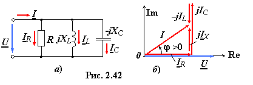

комплексным методом
Рассмотренные ранее методы анализа схем замещения цепей постоянного тока (ЗК, МУН, МКТ, МЭГ и др.)
применимы к расчёту цепей синусоидального тока комплексным методом. Рассмотрим особенности методов анализа цепей синусоидального тока при параллельном соединении ветвей посредством комплексных функций (чисел).

При параллельном соединении элементов R, L и C между собой и с источником синусоидального напряжения u = Umsinωt (рис. 2.42а) комплекс тока I на входе цепи может быть найден по 1ЗК, как сумма комплексов токов
ветвей: I = IR + IL + IC, определённых по закону Ома:
где g = 1/R, bL = 1/XL, bС = 1/XС − модули проводимостей идеализированных двухполюсных элементов R, L и C, или как произведение комплекса входного напряжения U и
комплекса входной проводимости Y, т. е. I = YU, где Y
= Y1 + Y2 + Y3 = g − jbL + jbC.
Векторная диаграмма входного напряжения и токов цепи при
XL > XС приведена на рис. 2.42б, где IR и jIX = jIС − jIL – активная и реактивная составляющие комплекса тока I цепи; φ = arctg(IX/IR).
При параллельном соединении ветвей, содержащих как один, так и несколько последовательно соединённых пассивных элементов (рис. 2.43а), комплекс входного тока также находят в виде суммы предварительно найденных комплексов токов ветвей, т. е. I = I1 + I2 + I3 (рис. 2.43б), где:
,
,
или в виде произведения заданного комплекса напряжения U и комплексной
входной проводимости цепи Y, т. е.
I = YU, где Y = Y1 + Y2 + Y3; Y1 = 1/Z1, Y2 = 1/Z2, Y3 = 1/Z3.